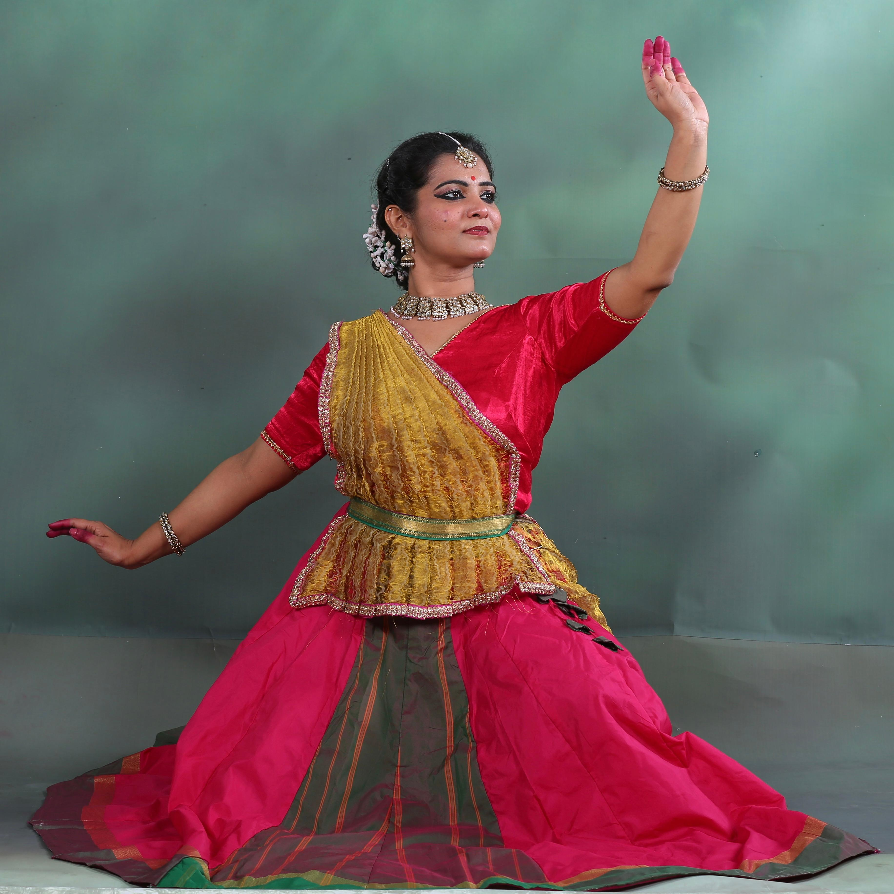
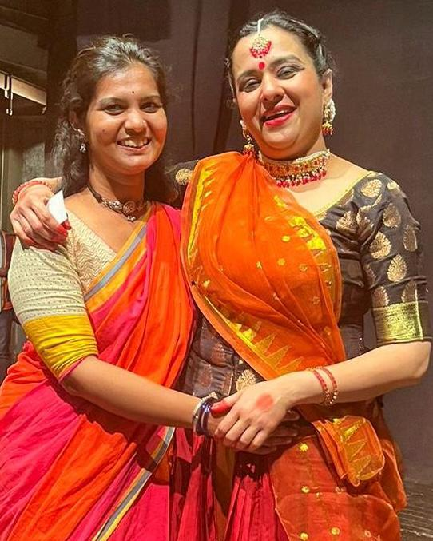
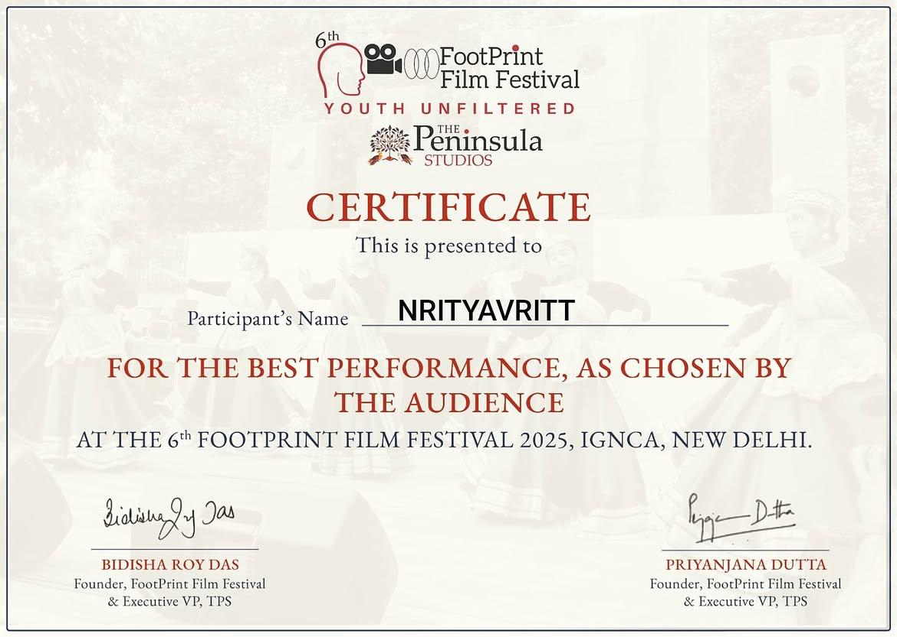

Where Rhythm Meets
Stories in Motion
Nrityavritt: Established in 2019, with a vision to promote Indian classical dance, and nurturing the young minds with the beauty of kathak.
Founded by Ms. Namita Dwivedi, a dedicated Kathak practitioner, performer, and teacher.
Nrityavritt has performed at various prestigious cultural events which includes Palash festival organised by DDA, Narthaki at Muktadhara Auditorium, Teej Mahotsava organised by Rajasthani Academy, Cultural Dance Evening at Russian House, New Delhi, Footprint Film Festival at IGNCA supported by Ministry of Culture and Ministry of Information and Broadcasting, National Author's Day at India International Centre, Shilp Samagam Mela at Dilli Haat, INA supported by Ministry of Social Justice and Empowerment, Akshar Mahotsava at National Museum, New Delhi supported by Ministry of Culture, Samvidhaan Mahotsava 2.0 organised by COHAS and many more..
Under the direct pedagogical guidance of Namita Dwivedi
Weekdays and Weekend Batches available
Our instructor or helper will contact you with batch timings
Certified courses
Gandharva Mahavidyalaya examination aligned curriculum
Performance Opportunities
Prestigious cultural festivals, national stages & events

Namita Dwivedi
Alankar Poorna • Jaipur Gharana
“Dedicated practitioner, performer & educator bringing a pedagogical approach to the sacred art of Kathak.”
Meet our artistic director Namita Dwivedi
Under the direct pedagogical guidance of Namita Dwivedi

Expressive Abhinaya & Bhav Sadhana
Artistic Director: Namita Dwivedi
Namita Dwivedi
Under the direct pedagogical guidance of Namita Dwivedi
Namita Dwivedi is a dedicated Kathak practitioner, performer, and educator rooted in the Jaipur Gharana. A disciple of Smt. Monisa Nayak ji she holds an Alankar Poorna degree from Gandharva Mahavidyalaya. Seeking to immerse herself fully in the nuances of Kathak, she has been privileged to train under Guru Shri Dheerendra Tiwari ji. Combining her deep artistic training with a strong academic background—holding an MA in English from Jamia Millia Islamia and a B.Ed. from IP University—Namita brings a pedagogical approach to her craft. She is the founded Nrityavritt, an institute dedicated to the preservation and teaching of Kathak.

Best Performance Award & Certification
Conferred upon Ms. Namita Dwivedi in honor of exemplary classical execution, stage choreography, and lifelong dedication to Jaipur Gharana Kathak parampara.
Academy Training Batches
Under the direct pedagogical guidance of Namita Dwivedi
Weekdays & Weekend Batches
Jaipur Gharana Tatkar (footwork), Hastaks, Tihais, Chakkars, and mindful stress relief.
ℹ️ Our instructor or helper will contact you to coordinate batch timings
Junior Classical Foundation
Rhythm development, basic footwork, mudras, classical discipline & storytelling in motion.
ℹ️ Our instructor or helper will contact you to coordinate batch timings
Certified Courses (Gandharva Exam Track)
Formal theoretical & practical syllabus for Gandharva Mahavidyalaya Mandal certifications.
ℹ️ Our instructor or helper will contact you to coordinate batch timings
Performance Opportunities & Repertoire
Choreography for national cultural festivals, annual rangmanch recitals, and solo showcases.
ℹ️ Our instructor or helper will contact you to coordinate batch timings
Live Academy Reels & Riyaz
Watch authentic classroom training sessions, weekend batches, and pedagogical padhant with Guru Namita Dwivedi. Videos play automatically as you scroll on screen or hover.
Weekend Kathak Batches
Admissions Open“Admissions Open for weekend batches! 🌼 Days : Sat, Sun. Time : 6 p.m. DM for more info! #kathak #fyp #instareels”
Weekend Kathak classes at South Ganesh Nagar, Delhi. Saturday & Sunday batches. Our instructor or helper coordinates batch timings.
Studio Riyaz with Namita Dwivedi
Artistic Director Guidance“Kathak Classes @nrityavritt 🌼 DM for more info! #kathak #fyp #instagood”
Direct pedagogical instruction by Guru Namita Dwivedi in Jaipur Gharana tatkar, mudra precision, and abhinaya.
Weekend Classical Sadhana
Jaipur Gharana Sadhana“Admissions Open for Weekend Kathak Classes. DM for more info. #fyp #kathakclass #jaipurgharana”
Authentic Jaipur Gharana training, hand mudras, and rhythmic footwork practice for beginners and advancing shishyas.
Weekend Sadhana & Padhant
Admissions Open“Admissions Open for Weekend Kathak Classes 🌼 #fyp #instareel #danceclasses #kathakclasses”
Live classroom padhant recitation and rhythmic guidance by Guru Namita Dwivedi at Nrityavritt Studio, Delhi.
Explore More on Instagram
Follow @nrityavritt and @namitakathak_ for daily classroom padhant, tatkar riyaz, and upcoming classical workshops.
Register for Nrityavritt Kathak Classes
Fill out the form below. Applications are processed directly, and our instructor will contact you to coordinate batch timings.
Visit Our Delhi Studio
Conveniently located in East Delhi near Nirman Vihar and Mayur Vihar connectivity. Drop in for a studio walkthrough or schedule your weekend trial session.
Nrityavritt Studio
D-125, 1st Floor, Balaji Bhawan,
South Ganesh Nagar, Delhi - 110092
(Close to Laxmi Nagar / Nirman Vihar Metro)
Studio & Inquiries
Weekdays & Weekend Batches Available
Our instructor or helper will contact you directly to coordinate batch timings.
Admissions Email
nrityavritt@gmail.comHave an enquiry?
Chat with our instructor / helper directly
Easy Accessibility Across Delhi NCR
Situated in South Ganesh Nagar, our studio features traditional wooden flooring optimal for tatkar resonance, mirrored rehearsal walls, professional sound systems, and a serene spiritual ambience suited for classical practice.
Balaji Bhawan • South Ganesh Nagar
1st Floor, D-125, South Ganesh Nagar, Delhi - 110092
Get Driving Directions